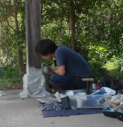
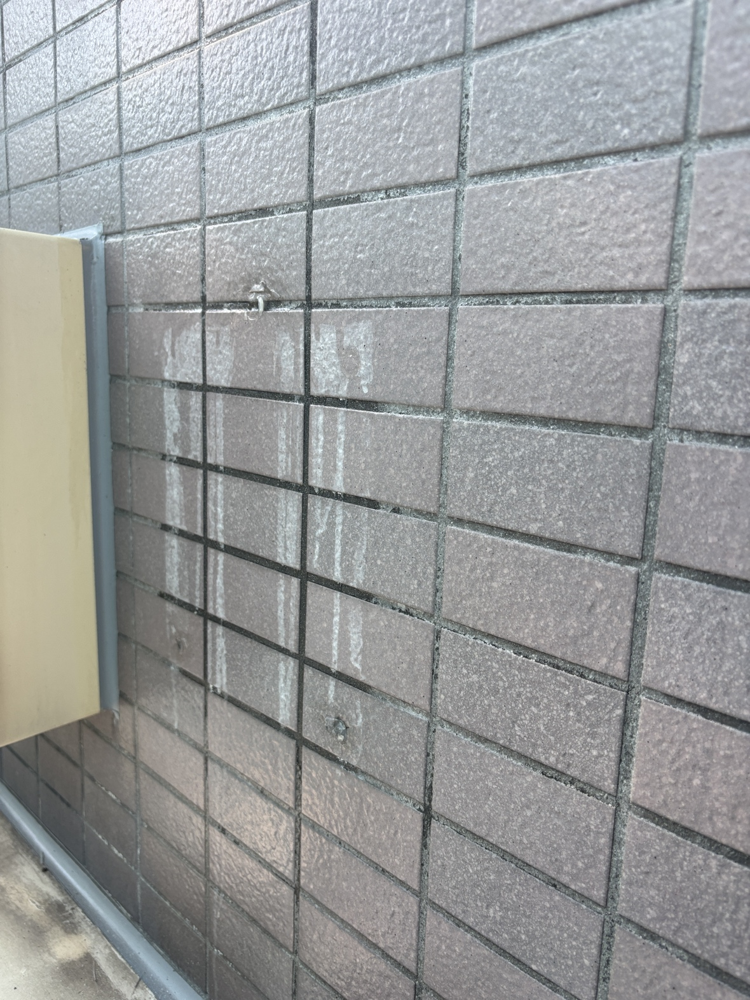
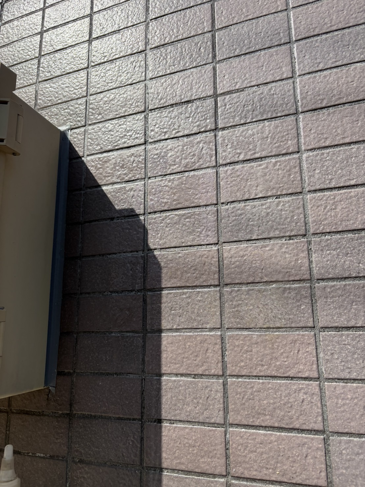
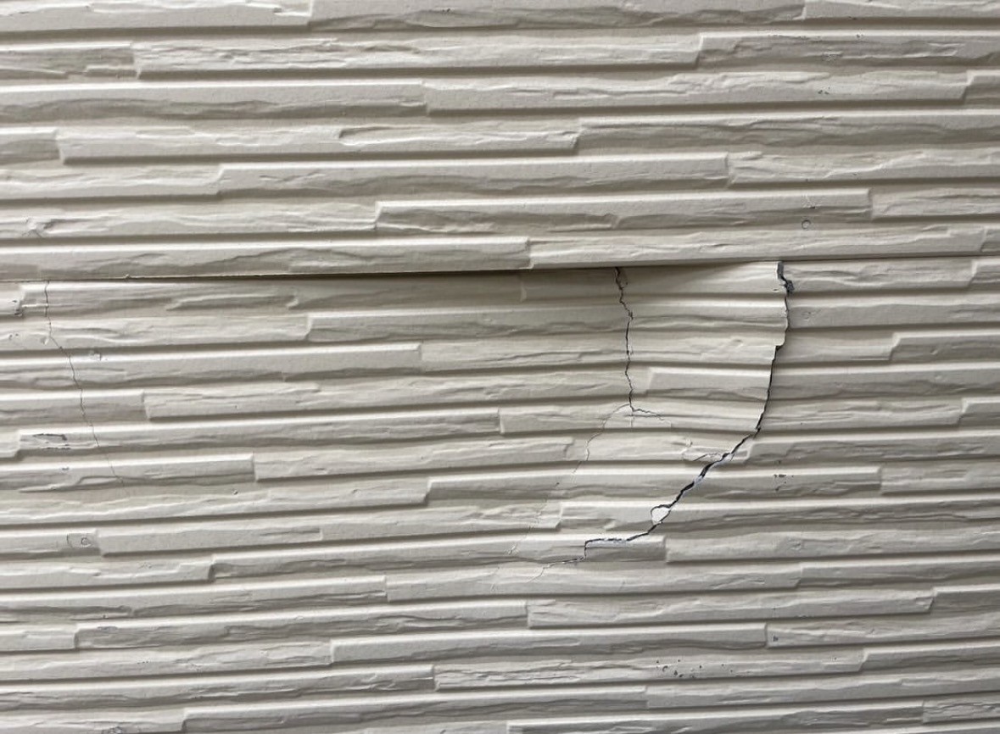
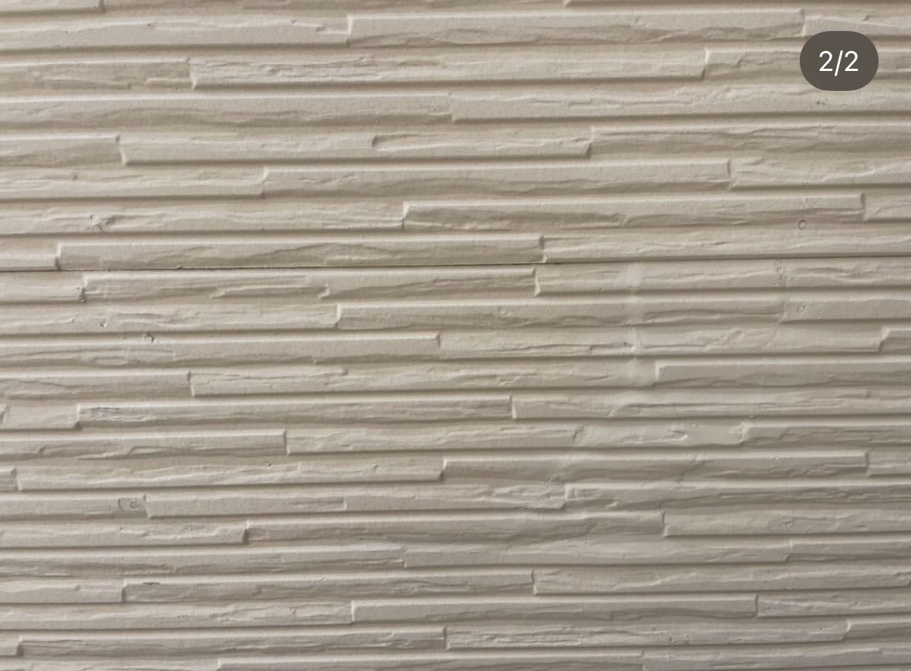
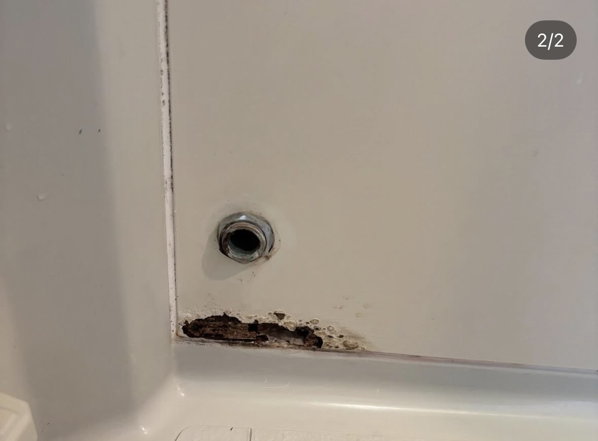
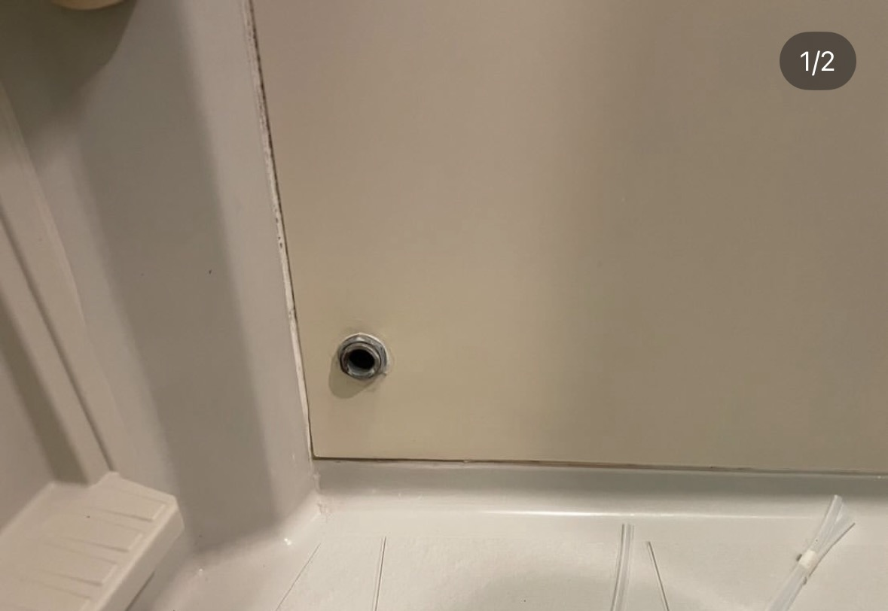

このような補修に対応しています
「全部やり替えるほどではないけれど、きちんと直したい」 という補修のご相談に対応しています。
- 外壁の欠け・ひび割れ・目立つ跡
- 配線跡・ビス穴・設備撤去後の補修
- 水回りの腐食や傷み
- 小規模な原状回復工事
- 管理物件の部分補修
一般の方も、不動産管理会社様もご相談ください
一般住宅の補修だけでなく、賃貸物件や管理物件の補修にも対応しています。
小さな補修から対応していますので、 「こんなこと頼んでいいのかな？」という内容でもご相談いただけます。
補修で対応できる場合は、無理に交換工事をおすすめしません。
実際の作業風景
現場の状態を確認しながら、一つ一つ手作業で補修を行っています。 同じように見える補修でも、素材や傷み方によって進め方は変わります。


施工事例① 外壁補修
施工前・施工後設備撤去後の跡や劣化部分を補修し、できるだけ自然な見た目に整えた事例です。


施工事例② 外壁の跡補修
施工前・施工後外壁に残ってしまった跡や不自然な部分を補修した事例です。


施工事例③ 水回りの腐食補修
施工前・施工後水回りの傷みや腐食を補修した事例です。


カンワースの補修について
- 現場確認のうえ、補修で済むかを判断します。
- 必要以上の工事をすすめません。
- 一般住宅・賃貸・管理物件まで対応可能です。
- 小さな補修からご相談いただけます。
補修のご相談はこちら
外壁補修、部分補修、原状回復、小規模なリペアなど、 まずはご相談ください。
会社ページ・お問い合わせはこちら補修の考え方や、その先の建物提案を見る